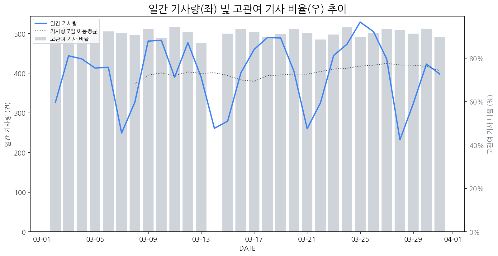

1
시장 활동 지표
기사량 추세 & 이상 징후 탐지
시장의 '전체 기사량'이 평소보다 비정상적으로 급증했는지(Spike)를 차트로 확인하고, LLM이 분석한 급등의 핵심 원인을 파악할 수 있음

고관여 기사란? 산업 연관 키워드로 수집된 기사들 중 디스플레이 키워드에 가중치를 반영하여 도출된 관련성 높은 기사
수집된 기사 수 (2026-03-31)
398
-16% WoW
기사량 변동 수준 (7일 이동평균 대비)
±6.7% 이하
2
오늘의 키워드
급격한 관심 ↑, 주목해야 할 키워드
1
스마트폰
+2.1σ
스마트폰 상장 기업 브랜드 평판 분석 기사들이 다수 노출되며 관련 관심이 집중되었습니다.
Related Metrics
금일 언급량: 10, 전일 대비: +2
Interpretation
신규 스마트폰 수요 증가 기대
Next Step
'스마트폰' 관련 상세 기사 및 경쟁사 반응 모니터링
3
실시간 Risk 키워드
경계해야 할 시그널 탐지
특정 토픽의 부정 감성 점수가 급등할 때 이를 즉시 탐지하고, "근거 기사" 링크를 통해 리스크의 실체를 빠르게 파악할 수 있음
키워드 분석 결과, 오늘은 걱정할 만한 하락 신호가 없습니다. (부정 언급량 변화: +1.5σ 이내)
4
주요 이벤트 모니터링
실시간 산업 동향 파악을 위한 주요 활동
최근 발생한 주요 기업들의 신제품 출시, 투자 등 주요 이벤트를 제공하여 매일 경쟁사 동향을 확인할 수 있음
한국 디스플레이 기업들이 고가 프리미엄 제품 전략을 통해 시장에서 성공을 거두고 있으며, 이는 비싼 제품이 오히려 더 잘 팔리는 현상으로 나타나고 있습니다.
Impact
이러한 성공은 프리미엄 디스플레이 시장의 성장을 가속화하고, 기술 혁신과 차별화된 제품 개발 경쟁을 심화시킬 것입니다.
Next Step
기술 리더십을 바탕으로 프리미엄 제품 라인업을 강화하고, 차세대 기술 개발에 지속적으로 투자하여 경쟁 우위를 확보해야 합니다.
반도체 장비 관련주인 프로이천, 지앤비에스에, 서진시스템 등이 시장에서 주목받고 있다. 이는 해당 기업들의 실적 개선 또는 신규 수주 가능성에 대한 기대감을 반영하는 것으로 해석된다.
Impact
이러한 반도체 장비주의 약진은 디스플레이 제조 공정에서도 반도체 기술과의 융합이 가속화되고 있음을 시사하며, 관련 장비 및 소재 분야에서의 신규 사업 기회 창출 가능성을 높일 수 있다.
Next Step
디스플레이 제조 기업은 반도체 장비 기술 동향을 면밀히 주시하며, 차세대 디스플레이 제조 공정에 필요한 핵심 장비 및 기술 확보를 위한 파트너십 또는 자체 개발을 검토해야 한다.
삼성전자 시스템LSI 사업부가 흑자 전환을 목표로 파운드리 사업부와 협력하며 사업 구조를 재편하고 투자를 확대하고 있습니다. 이를 통해 수익성 개선과 기술 경쟁력 강화를 추진할 계획입니다.
Impact
이번 삼성전자 시스템LSI의 흑자 전환 노력은 차세대 디스플레이 구동 칩 및 관련 반도체 시장에서 기술 혁신과 공급망 경쟁을 더욱 심화시킬 것으로 예상됩니다.
Next Step
디스플레이 제조 기업은 삼성전자 시스템LSI의 기술 개발 동향을 면밀히 주시하며, 차세대 디스플레이용 반도체 공동 개발 또는 안정적인 공급망 확보를 위한 전략적 협력을 모색해야 합니다.
메르세데스-벤츠는 AI, 전기차, 유통 혁신을 총집결하여 미래 자동차 시장에서의 경쟁력을 강화하려는 움직임을 보이고 있습니다. 이는 자동차 산업의 패러다임 전환을 주도하려는 기업의 의지를 나타냅니다.
Impact
메르세데스-벤츠의 미래차 기술 및 혁신 전략 강화는 차량 내 디스플레이의 고도화, 인터페이스 혁신, 그리고 사용자 경험 향상에 대한 요구를 증대시켜 관련 디스플레이 기술 및 솔루션 시장에 새로운 기회를 제공할 수 있습니다.
Next Step
디스플레이 제조 기업은 메르세데스-벤츠와 같은 프리미엄 자동차 제조사의 차세대 차량에 적용될 고해상도, 고휘도, 대형화, 그리고 통합형 디스플레이 솔루션 개발에 집중하고, 차량 내 AI 및 UX와의 시너지를 고려한 기술 로드맵을 준비해야 합니다.
LG전자의 러시아 내 6건의 상표권이 만료되었으며, 이로 인해 러시아 시장에서 LG 브랜드의 공백이 현실화될 가능성이 제기되었습니다.
Impact
이번 상표권 만료는 LG전자의 러시아 시장 내 디스플레이 제품 판매 및 브랜드 인지도 유지에 부정적인 영향을 미칠 수 있습니다.
Next Step
러시아 시장 내 브랜드 보호 및 대체 전략 수립을 통해 디스플레이 제품 판매 채널 및 마케팅 활동에 대한 영향을 최소화해야 합니다.